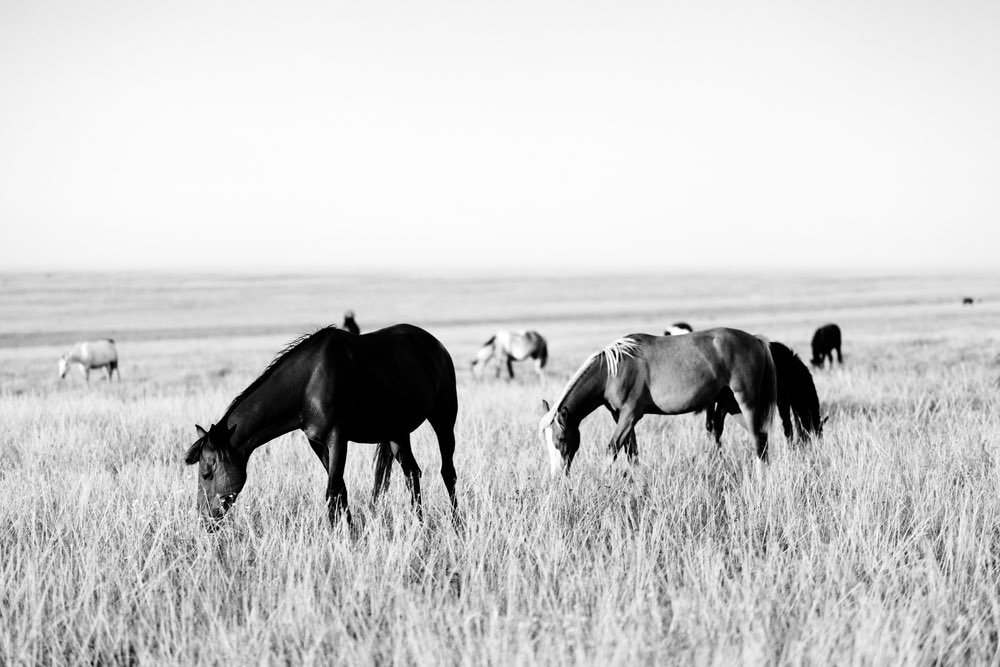
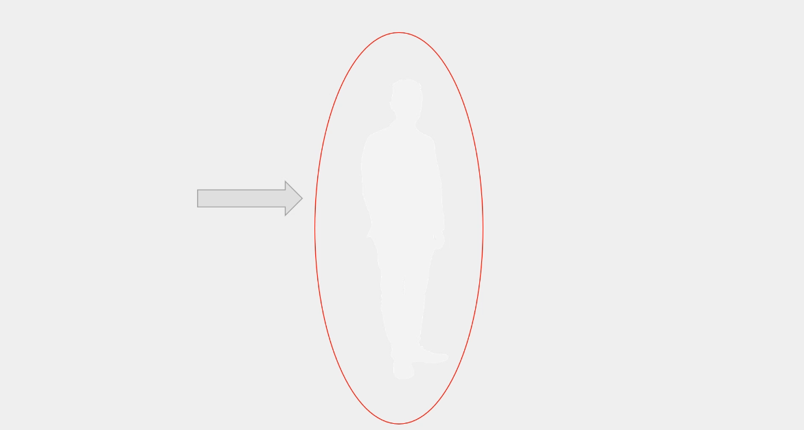
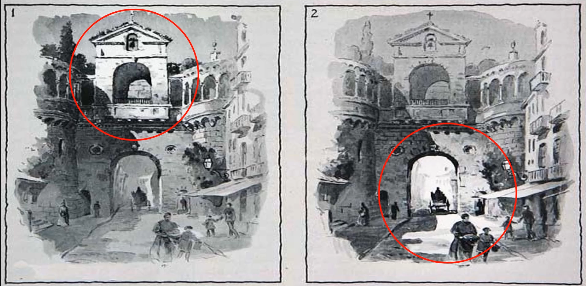

톤 대비 마스터링

전체 톤 영역을 활용한 고대비 풍경. 깊은 그림자부터 밝은 하이라이트까지의 완전한 범위
대비 활용 핵심 팁
극적 효과: 높은 대비로 강렬한 시각적 임팩트
부드러운 분위기: 낮은 대비로 차분하고 우아한 느낌
초점 유도: 대비 차이로 주목도 조절
감정 전달: 대비 수준으로 분위기 설정
높은 대비
낮은 대비
극적 실루엣
최대 대비를 활용한 실루엣 효과. 순수한 검정과 흰색의 극명한 차이

대비 예시 1

대비 예시 2

대비 초점